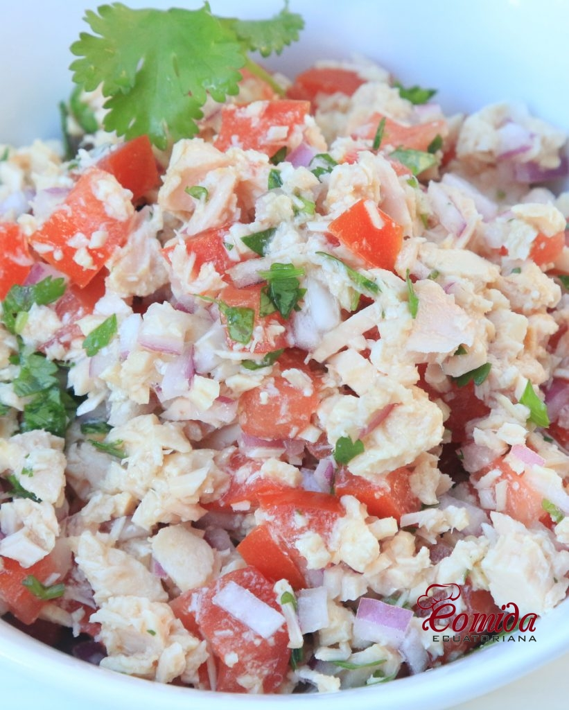

Ensalada fresca

Ingredientes
- Lechuga
- Tomate
- Cebolla
- Atún
- Maíz
- Queso feta
- Aliño: aceite, vinagre, sal y pimienta
Tiempos:
Pasos
- Lavar la lechuga y cortarla en tiras. Colocarla en una ensaladera.
- Cortar el tomate y la cebolla en rodajas y añadirlos a la ensaladera.
- Agregar el atún, el maíz y el queso feta desmenuzado.
- Aliñar con aceite, vinagre, sal y pimienta al gusto.
- Mezclar bien todos los ingredientes y servir.